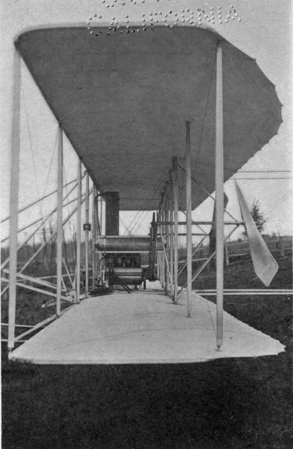

The Perils Of Flying. Part 4
Description
This section is from the book "The New Art Of Flying", by Waldemar Kaempffert. Also available from Amazon: The New Art of Flying.
The Perils Of Flying. Part 4
Fig. 67. Mechanism of a meteorograph which records the velocity of the wind, the temperature, the humidity, and the barometric pressure.
Photograph by George Brayton.
That the question of speed in descent is a matter for which provision should be made is shown by the fatal death of Wachter at Reims in 1910. The speed in descending is higher than when flying level. In some cases the horizontal strength of the wings appears to provide a very small margin for this increased stress, and the accidents seem to have happened exactly as suggested, for in each case, when rapidly descending from a height, the wing collapsed.
It may be said that when descending the engine ought to be stopped and the descent made at a speed not exceeding that which can be maintained on the level. Still, it is hardly practicable to adhere to any such principle; for in alighting it is necessary to travel at top speed to clear the ground eddies. Moreover, if the aeroplane is to be of any practical use, it must be made to stand any reasonable usage to which it is likely to be subjected. Bicycles and motorcars are often run down hill, or before a wind, at speeds far higher than can be maintained on the flat, and it is quite certain that a machine which is unsafe under these circumstances is not fit for ordinary work. Most men run down a hill as fast as they can without losing control of their cars, and aviators will doubtless do the same. The machine must, therefore, be made to stand the stresses set up under these conditions.
Very little is known of the air's power of breaking aeroplanes travelling at high speeds. Designers work from tables that indicate the breaking strength of wire and wood and the percussive force of the wind at different velocities. But the actual buffeting to which a machine is subjected in the air is still an engineering uncertainty. A storm will tear the roof from a house and toss it a hundred yards; yet aeroplane designers require a machine to travel through the air at hurricane speed and bear up under the sledge-hammer blows of the air, — a machine that is the flimsiest vehicle in which man has risked his life, composed, as it is, of fragile wires, the lightest wood cut as finely as possible, and fabric that is affected by variations in the weather.
In some of the tragedies of the flying-machine the propeller and the motor have each played their part. Lieutenant Selfridge's death at Fort Myer on August 17, 1908, was due to the snapping of a propeller blade, which struck a loose wire, an accident that for months crippled Orville Wright, who was piloting the machine. This, of course, was not due to any inherent defect in the propeller. Indeed, the Wright propellers, because of their low speed (four hundred to five hundred revolutions a minute), are probably the safest in use. The propellers of most monoplanes and biplanes travel at speeds as high as fifteen hundred revolutions a minute, or about as fast as an electric fan. Propellers mean more to an aeroplane than stout axles on an automobile; for if a flying-machine stops it must glide down. Nearly every contestant at a flying-machine meeting is equipped with spare propellers, which are as near alike as brains and hands can make them. Yet the same engine will not be able to turn two propellers seemingly alike at the same speed. Why? Because man can make steel, but he cannot make wood. That is grown by nature. And because woods from different trees are not alike the propellers formed from them are not alike. Untraceable and insurmountable variations create the differences. In aeroplaning science success or failure depends on just such slight differences.
The propeller's mechanical cousin, the motor, is also not what it ought to be. At very great heights it is impossible to obtain adequately high compressions in the motor cylinders. Hence the motor stops, and the aviator must glide down, — vol plane, as the French call it. Such glides can be made with comparative safety if the pilot is skilful. Occasionally it happens that motor stoppages have been the cause of death. It was the stopping of his motor that killed Leblon at San Sebastian on April 2, 1910, and Van Maasdysk at Amsterdam on August 22, 1910.
To prevent such accidents, Mr. Edwin Gould in 1910 offered through the Scientific American a prize of $15,000 to the designer and demonstrator of a successful machine equipped with more than one motor, the arrangement being either such that should one motor be disabled another can be immediately thrown into gear, or that if all the motors should be running simultaneously the stoppage of one will not necessarily leave the apparatus without power. The progress which has been made since the Wright Brothers gave us the first successful man-carrying motor-driven aeroplane can hardly be called scientific progress. Much of it has been progress of the trial and error variety, very costly and not always productive of valuable results. It may be retorted that, despite the highly scientific experiments of Langley and Maxim, we really owe the successful machine to such men as the Wright Brothers, who are not profound mathematicians but skilful, practical mechanics. If the whole truth were known about the years of patient experimenting which finally led the Wright Brothers to the invention of a successful flying-machine, it would probably be discovered that they were no less scientific in their methods than was Langley himself.
Fig. 69. A glimpse through a Wright biplane. The two planes are trussed together like the corresponding members of a bridge, so as to obtain great strength.
The problem of building a flying-machine is in quite a different position from what it was. If flying-machines are not to be subjected to frequent accidents and are to be made accessible to the million, the sooner aeronauts learn engineering the better. Not until engineers are employed to design and build flying-machines shall we be able to skim the air as safely as we now roll along the ground in motor-cars.
Continue to: